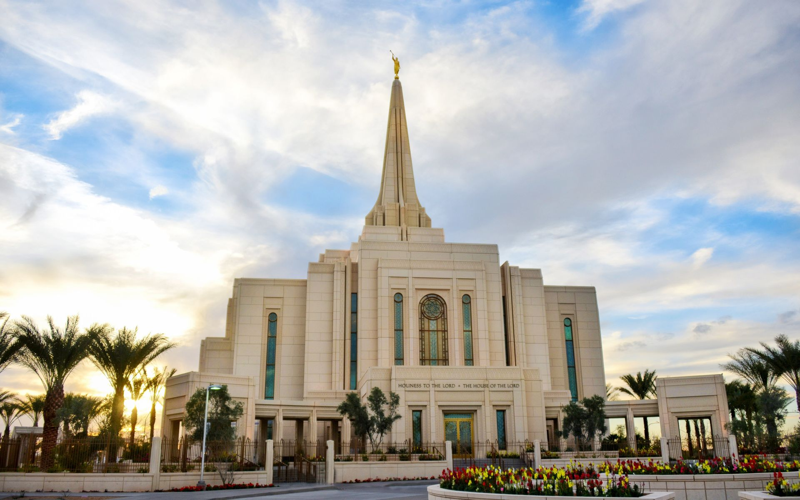

Gilbert Arizona Temple
The Gilbert, Arizona Temple was dedicated by Thomas S. Monson amd Henry B. Eyring on March 2, 2014, making it the 142nd temple.
The Gilbert, Arizona Temple was dedicated by Thomas S. Monson amd Henry B. Eyring on March 2, 2014, making it the 142nd temple.